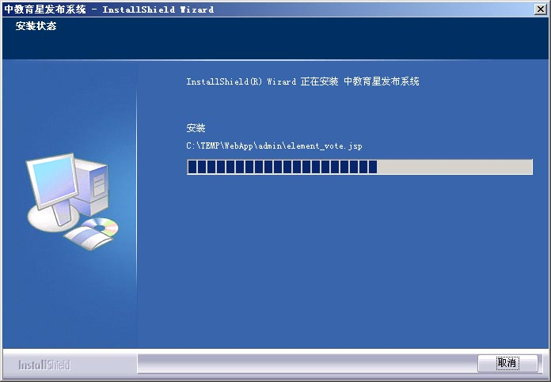

使用安装程序安装
注意: 请确定安装之前您查看了安装准备和系统需求的说明。
1. 启动安装程序之后，安装程序将需要一小段时间解压安装包，如下图示：
2. 安装程序解压准备完成之后，显示欢迎页面，如下图示：
点击 '下一步' 按钮继续安装。
3. 安装程序显示版权声明，如果您同意许可证中的条款请选择接受，并点击 '下一步' 按钮。
4. 安装程序请您输入您的名字和您所在单位名称，并点击 '下一步' 按钮。
5. 选择安装模式，是完全还是定制方式，并点击 '下一步' 按钮。
6. 假定您选择了完全安装模式，系统需要您选择安装的目录，Tomcat 端口等配置，如下图示:
其中：
- Tomcat 应用目录指您要将 Tomcat 安装在哪个目录下，请确定该目录不会覆盖您可能已经安装的 Tomcat.
如果您已经安装了 Tomcat，我们建议您选择定制安装模式，或者手工安装以使用您现有的 Tomcat.
- Web 发布虚拟目录名称 指发布系统安装在 Tomcat 网站的哪个虚拟目录下面，如果您输入了一个名字则表示
安装之后的发布系统将以该名字做为发布站点的根目录。
- Web 发布端口号 指 Tomcat 在哪个端口进行 HTTP 服务。请确定该端口号没有被占用，否则 Tomcat 无法启动。
例如 Windows IIS (Internet Information Service) 缺省将占用 80 端口，您可以换一个端口号，或者暂时停止 IIS 服务以释放该端口。
又或者您已经有的 Tomcat 占用了该端口，此时请更换一个端口，或选择将发布系统装在您现有的 Tomcat 下面。
- 数据库服务器地址 指 SQL Server 服务器的地址，安装程序将在该服务器上加装数据库。
一般使用本机 SQL Server 的时候请填写 localhost，如果使用别的机器上的 SQL Server，请填写 IP 地址或机器名。
- 数据库名称 指安装的数据库在 SQL Server 中的名字。请确保其没有和现有数据库名字重复。
如果您安装了多套发布系统实例在一台机器上面，要确保每套发布系统使用不同的数据库名字。
- 数据库登录用户名称 指为访问该数据库，使用的用户名。我们建议您为每个发布系统实例数据库使用不同的用户名，
这样能够加强安全性。建议不要使用 'sa' 做为数据库登录用户名。
- 数据库登录用户密码 指该登录用户的密码。
7. 设置数据库信息，在这里设置新增的发布系统数据库的名称。已经 SQL Server 管理员 'sa' 的密码，其用于在 SQL Server 中添加数据库。
8. 安装执行，请稍等一会安装程序进行文件复制及配置工作。

9. 安装完成：
10. 安装过程中可能由于种种原因发生问题，一般而言经常发生的问题有：
Tomcat 配置文件无法更新 - 这通常是由于 Tomcat 安装不正确或该文件被占用导致的，您可以手工配置一下该配置文件。
SQL Server 数据库无法挂接 - 这通常是由于 SQL Server 不在本机或者 'sa' 管理员密码不正确，或 SQL Server 未运行导致的。
您可以通过手工方式自己挂接数据库，或通过我们提供的辅助工具完成数据库设置。
TODO: 参见常见问题说明。
11. 检查
正如世界上任何事情一样，安装时任何步骤都可能出错。我们尽力使安装能够完成它的任务，但有时候仍然会发生错误。
检查列表如下：
a. 数据库添加成功。
b. Tomcat 及其支持 JRE 安装成功，如果您已经有了 Tomcat 此一检查可以不做。
c. Tomcat 中虚拟目录配置成功，其位于 Tomcat/conf/server.xml 配置文件中。
d. 发布系统中数据库连接配置正确，其位于 publish/WEB-INF/classes/beans-config.xml 文件中。
TODO: 参见常见问题说明。